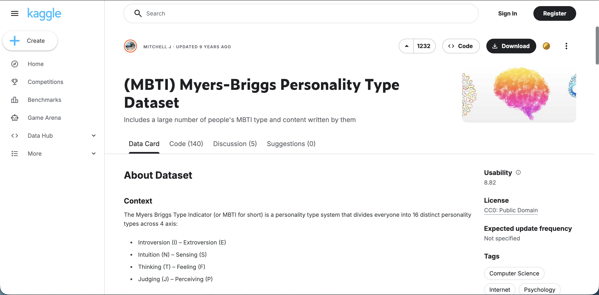
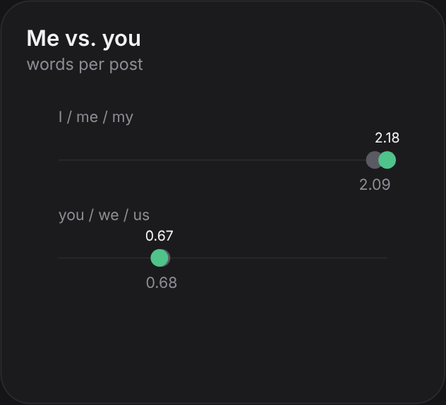
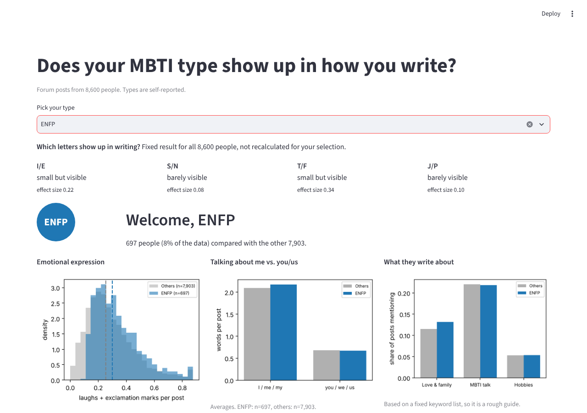
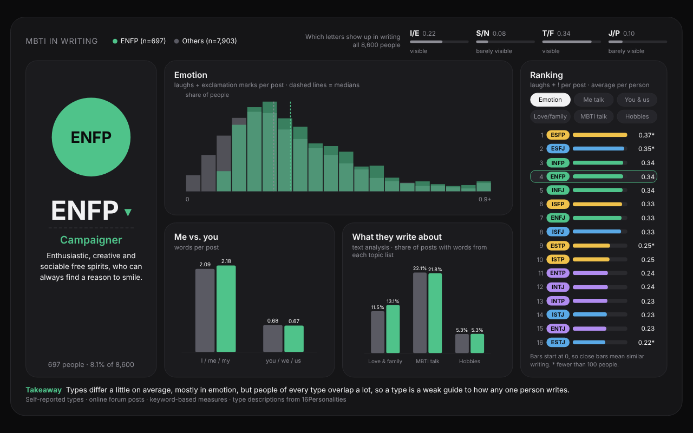
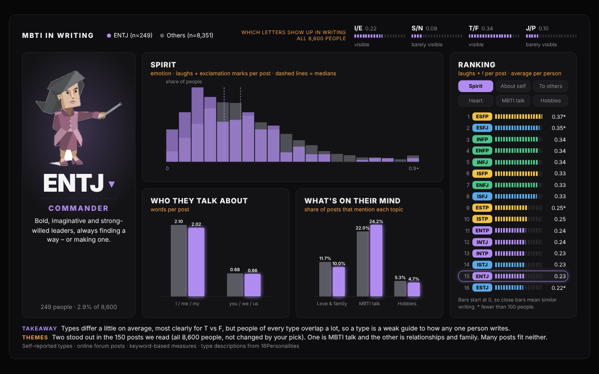
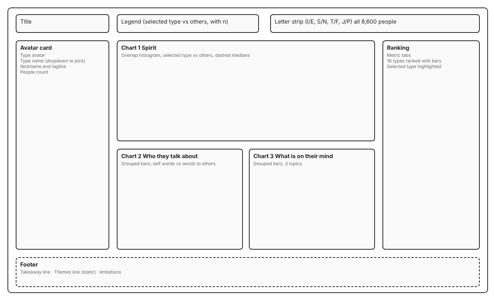

“Us ENFJs.... we always know just the right thing to say.”
Record 3658, ENFJ
A dashboard that shows how much MBTI type shows up in the way people write.
Problem
How much does MBTI type show up in the way people write online?
Solution
I analyzed 8,600 forum users and built an interactive dashboard where people pick a type and compare it with everyone else.
Background
MBTI is a personality test that sorts people into 16 types. Each type has four letters, one from each pair: I or E, S or N, T or F, and J or P. It is hugely popular. 16Personalities says it has run over 1.58 billion tests, including more than 200 million in the United States. It also claims a 91.2% accuracy rating, which is the site’s own number and not an independent check. Its homepage promises you will “finally be understood.”
Research
People keep defending their own behavior with MBTI, like “I’m blunt because I’m a T.” I wanted to know how much a type really says about a person. So I looked at how people write online. I used the Kaggle MBTI dataset by Mitchell J, with forum posts from PersonalityCafe.
Types are self-reported. After cleaning, 8,600 users were left from 8,675. The question became how much type shows up in writing, and how much people of different types overlap.

Research
Each user had a self-reported type and about 50 posts, so I first had to turn text into numbers. I removed URLs because links are not the user's own words and would inflate word counts. I dropped users with under 20 posts or under 5 words per post, because there was too little text to measure their style. That removed 75 of 8,675 users. I checked this rule and the main finding did not change.

My first measures were words per post and question marks per post, because they are simple to count. They showed almost no gap. Words per post was 26.11 for I and 26.17 for E.

So I tried more than ten other measures and kept six that were common in posts and easy to explain. They cover emotion, how much people talk about themselves and others, and what they write about. They are keyword counts, so they are rough. I averaged each measure per user, so every person counts once and very active users do not take over the results.
Research
I compared the two groups of each letter pair, such as I vs E and T vs F. I did not compare all 16 types, because the groups are too uneven, from 1,819 users to 39. Most measures are skewed, with a long tail of very expressive users, so I used a rank-based test instead of averages. I report effect size, which runs from 0 (same) to 1 (no overlap). With 8,600 users even tiny gaps get tiny p-values, so p-values stop being useful.
T vs F has the biggest gaps (emotion 0.34, love and family words 0.27), and F types are higher. I vs E is next (MBTI talk 0.22). S vs N and J vs P stay under 0.10.

I also checked that the T vs F gap is not just an I vs E effect. It stayed about the same inside both I and E. But a gap in the average does not mean two separate groups. Emotion for T and F types overlaps a lot.

Research
Numbers show how much types differ, but not what people write about. So I read 150 posts with AI help, 5 from each of 30 random users. I chose many users over many posts from a few, so I would see a wider range of people. Posts in the data are cut at about 200 characters, so I read short pieces. Two themes stood out, MBTI talk and relationships and family. Many posts fit neither.
“Us ENFJs.... we always know just the right thing to say.”
Record 3658, ENFJ
“Having had multiple confrontations like this with my roommate, I absolutely agree with the things that have already been mentioned.”
Record 5991, ESFJ
A small sample cannot show how common a theme is. So I counted keywords across all posts. MBTI talk showed up in about 27% of E posts and 22% of I posts, and love and family words in about 12% of F posts and 9% of T posts. This is a rough count. The forum is about MBTI, so type talk may reflect the forum and not personality.

Takeaway: Types differ a little on average, most clearly for T vs F, but people of every type overlap a lot. A type is a weak guide to how one person writes.
Ideation

❗ Challenge: The first “me vs. you” chart was a dot plot. It did not make the message clear, and its title was confusing.
What I did: I switched to grouped bars with value labels and renamed it “Who they talk about.”


❗ Challenge: The first version was a long page. It was hard to take in, and there was no way to compare all types.
What I did: I fit everything on one screen and added a ranking of all 16 types. Every bar starts at zero, and types with fewer than 100 people get an asterisk. I kept real values instead of game-style 0 to 10 scores so small gaps would not look big.

❗ Challenge: A plain dropdown and charts felt like a report, not like something about you.
What I did: I turned it into a character-select screen. Each type has its official avatar, nickname, and tagline, and the accent color follows the four MBTI groups.
Final Solution
Choose a type to see its avatar, nickname, tagline, and group size. The dashboard compares that type with everyone else.
Spirit, Who they talk about, and What’s on their mind compare the selected type with everyone else. A ranking keeps all 16 types visible.

The letter strip uses all 8,600 people and does not change with a selection. The takeaway explains overlap and limits so small differences are not over-read.
Reflection
Constraints
Types are self-reported and the data comes from one MBTI forum. Keyword counts are rough. I could not check whether one person appeared twice.
Room for Improvement
The text sample was small and read by me with AI help. I would add a second reader and test the keyword lists on more posts.
Next Steps
Run an A/B test of average bars versus bars with overlap. Then try the same questions on writing from outside an MBTI forum.